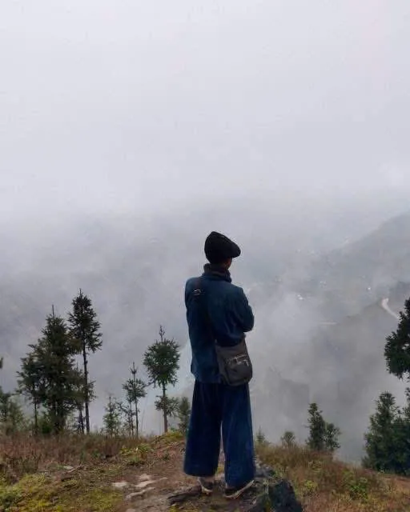
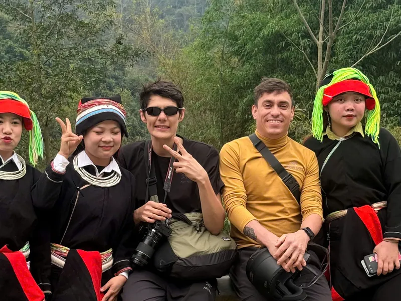

3 ngày · 2 đêm
3 ngày · 2 đêm
Vòng cung cổ điển
Tự lái$190
Có lái xe$230
- Chỗ ngủ2 đêm homestay, Đồng Văn & Du Già
- XeHonda XR150 · Yamaha WR155
- Nhóm2–5 khách, không ghép đoàn
- Trên sôngThuyền Nho Quế và Bản An
Đồng Văn · Hà Giang
Hà Giang không chỉ là vài điểm check-in nổi tiếng và một con đường đầy xe du lịch.
Tôi giữ đoàn nhỏ — thường không quá năm người — để đi được những con đường mà đoàn lớn không vào nổi. Chúng tôi dừng khi có gì đáng xem, chứ không phải vì đó là điểm tiếp theo trong lịch.
Bạn sẽ gặp người dân bản địa, đi qua những bản nhỏ, ăn ở nơi tôi vẫn ăn, và đôi khi rẽ vào con đường không có biển chỉ dẫn nào.
Vì đây không phải nơi tôi tìm ra để làm du lịch. Đây là nhà.

Matt là ai
Tôi là Matt, hướng dẫn viên bản địa ở Hà Giang. Đây không chỉ là nơi tôi làm việc — đây là nơi tôi lớn lên.
Bên ngoại tôi là người Tày, và bà tôi từng lấy hàng từ bên kia biên giới Trung Quốc mang về bán cho bà con trong các bản quanh đây. Tuổi thơ tôi trôi qua ở chợ phiên, ở các bản làng và cộng đồng vùng cao. Tôi nghe nhiều thứ tiếng, gặp người của nhiều dân tộc, và dần hiểu cuộc sống ở những ngọn núi này thật sự vận hành ra sao.
Mười tám tuổi tôi bắt đầu làm nghề, phụ một người đầu bếp dẫn khách vào rừng. Sau đó tôi rời Hà Giang đi học và làm việc ở Hà Nội, làm website cho doanh nghiệp. Nhưng tôi nhớ nhà — nhớ bản làng, món ăn, con người, và nhớ cảm giác có chuyện đáng kể cho ai đó nghe.
Thế là tôi quay về. Đến nay tôi đã dẫn khách khắp Hà Giang nhiều năm, và tôi vẫn sống ở đây.
Điều đó quan trọng, vì tôi không muốn cho bạn xem Hà Giang từ mặt đường hay từ một danh sách điểm nổi tiếng. Tôi muốn cho bạn thấy Hà Giang mà tôi biết — những con đường nhỏ, những bản làng, con người, món ăn, những câu chuyện, và những nơi bạn sẽ đi lướt qua nếu không có ai chỉ.
Đó là tôi. Một người bản địa quay về nhà, và muốn chia sẻ nơi này với bạn.
Bốn cách để đi
Hai tới năm người. Không bao giờ ghép đoàn. Kế hoạch uốn theo trời, không phải ngược lại.
3 ngày · 2 đêm
Tự lái$190
Có lái xe$230
 4 ngày · 3 đêm
4 ngày · 3 đêm
Tự lái$245
Có lái xe$275

5 ngày · 4 đêmMỗi khách$549
 5 ngày · 4 đêm
5 ngày · 4 đêm
Mỗi khách$345
Không phải quảng cáo Chỗ tôi thật sự ăn và ngủ ở Hà Giang
Vì sao đi cùng Matt
Sinh ra trong gia đình có gốc Tày ở Đồng Văn. Tôi biết chợ nào họp ngày nào, nhà ai có thể ghé, và điểm nhìn nào đáng đi vòng trong ánh sáng tháng này.
Tôi nhận vài người, không phải một hàng xe dài. Nếu bạn là người đi chậm nhất, sẽ không ai nổ máy đứng chờ bạn.
Chúng ta ăn nơi tôi vẫn ăn. Dừng ở chỗ có gì đáng xem, không phải chỗ trả hoa hồng. Có ngày điều đó nghĩa là đi thêm một tiếng.
Mũ bảo hiểm đúng chuẩn, xe có bảo hiểm, và tốc độ khiến người phía sau sốt ruột. Tôi xem dự báo thời tiết trước khi xem lịch trình — sạt lở ở đây không phải chuyện đồn.
Lịch trình chỉ là bản nháp. Mưa, một phiên chợ, đường tắc, hay đơn giản là một bản làng bạn chưa muốn rời — tất cả đều được phép làm thay đổi cả ngày.
Nếu ngày của bạn không hợp với Hà Giang, tôi nói trước khi bạn đặt. Nếu có thứ gì không bao gồm, bạn đọc được trước khi trả tiền, không phải sau.
Lời của khách
Bạn rất tinh ý và cảnh giác trên mọi cung đường. Bạn đưa tôi tới những nơi khách du lịch không tới. Bạn biết cả những lối tắt.
Cứ giữ như vậy nhé! Bạn đang làm rất tốt.
Trước khi bạn hỏi
Đây là câu tôi được hỏi nhiều nhất, và nó xứng đáng có câu trả lời thật chứ không phải một lời trấn an. Bạn sẽ ngồi sau xe tôi hoặc đi bộ cạnh tôi suốt chuyến. Tôi chạy chậm và không vượt ở khúc cua khuất — phần lớn tai nạn trên cung này là do người vội. Mũ bảo hiểm là loại full-face đúng chuẩn. Homestay đều là nơi tôi quen. Bất cứ lúc nào bạn muốn dừng, đổi lịch trình hay quay lại, chỉ cần nói.
Cả hai đều được, không có lựa chọn nào sai. Nếu bạn chưa từng chạy xe côn tay thì nên ngồi sau — Hà Giang không phải nơi để tập lái, và ngày đầu của Off The Map là đường đất. Bạn có thể đổi giữa chuyến nếu thấy không hợp.
Không, nếu bạn ngồi sau. Muốn tự lái thì cần bằng lái Việt Nam, hoặc bằng quốc tế theo Công ước 1968 có hạng xe máy kèm bằng gốc. Thiếu giấy tờ thì bảo hiểm du lịch sẽ không chi trả nếu có chuyện, và trên cung đường này công an kiểm tra khá thường xuyên.
Mưa đến cùng mùa hè và kéo sang đầu thu, đó cũng là lúc hay sạt lở. Đường có thể mất vài ngày mới thông. Tháng 9 đến tháng 11 và tháng 3 đến tháng 5 là đẹp nhất. Tháng 12 đến tháng 2 rất đẹp nhưng lạnh thật sự. Gửi tôi ngày của bạn, tôi sẽ nói bạn nên chờ đợi điều gì.
Tối đa 5 khách, tối thiểu 2 khách để khởi hành. Mọi chuyến đều riêng tư, tôi không ghép đoàn. Nếu bạn đi một mình cứ nhắn tôi — đôi khi tôi ghép được với một nhóm khác, và nếu không được tôi sẽ nói thẳng.
Một ba lô nhỏ, không hơn. Vali lớn gửi tủ khoá ở thành phố Hà Giang và vẫn nguyên vẹn khi bạn quay lại.
Liên hệ
Tôi sẽ không nói đây là tour tốt nhất Việt Nam. Tôi không biết điều đó, và người nói câu ấy cũng vậy.
Điều tôi nói được là: tôi xem thời tiết trước khi xem lịch trình — sạt lở ở đây không phải chuyện đồn thổi. Tôi không phóng nhanh để tiết kiệm một tiếng đồng hồ; tôi đã thấy cái giá của một tiếng ấy. Nếu núi nói không, ta chờ, và tôi sẽ không khó chịu vì điều đó.
Nếu đó là kiểu chuyến đi bạn muốn, hãy nói tôi biết bạn đến khi nào — tôi sẽ nói thật với bạn đó có phải thời điểm tốt hay không.
Hoặc điền form ngắn — bốn câu hỏi, không hơn.
Bước tiếp theo
Tôi sẽ nói thật đó có phải thời điểm tốt để đi hay không, và chuyến nào hợp với bạn.